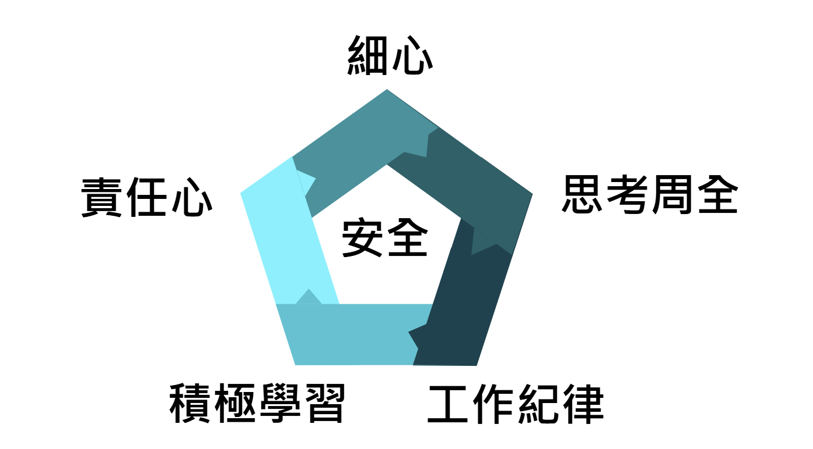

主要職責
輕軌電機技術員主要負責守護輕軌各車站設備安全。他們會在輕軌進行巡邏檢查，檢查變電站及車站設備是否有異常。此外他們還負責排程準備、教材和SOP製作與廠商接洽。
此職務對技術的學習需要時間消化，維持積極學習的態度是最重要的事！

一日行程
早班
- 07:00 上班 - 檢查當天巡檢項目
- 07:30 工作準備 - 討論當天工作項目並印製巡檢表單
- 08:30 開始工作 - 前往淡海輕軌各車站進行巡邏檢查
- 12:00 午休 - 回到機廠用餐與休息
- 13:30 表單整理、故障供單輸入系統、故障報修處理
- 15:00 交班 - 工作移交給午班小組
午班
- 15:00-15:30 與早班交接
- 15:30-17:30 回復廠商及主管訊息
- 17:30-18:30 晚餐時間
- 18:30-22:00 準備排程所需工具及執行工作排程
- 22:00-23:00 填寫工作日誌、保養工具及交接夜班
技術員應具備的態度
